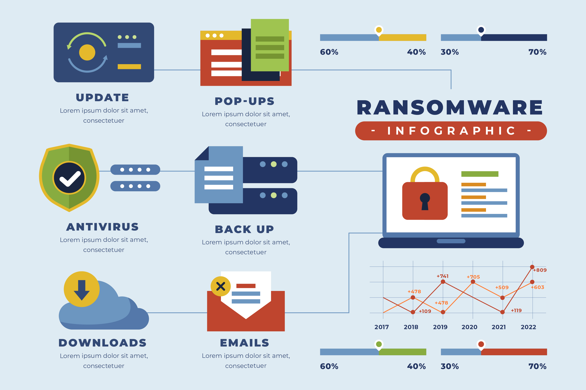

Halo SyncFriends
Dalam kesempatan ini, kami akan menerangkan kepada para syncfriends sekalian mengenai urgensi pengetahuan cybersecurity pada kehidupan sehari-hari.

Designed by Freepik
Dalam kesempatan ini, kami akan menerangkan kepada para syncfriends sekalian mengenai urgensi pengetahuan cybersecurity pada kehidupan sehari-hari.

Cybersecurity adalah segala jenis teknologi, usaha, atau praktik untuk mencegah seragan siber atau mengurangi dampak serangan tersebut.
Cybersecurity bertujuan untuk melindungi para individu, organasisasi, aplikasi, perangkat komputasi, data sensitif, terhadap serangan virus, trojan, ransomware, dan berbagai serangan berbahaya lainnya.
Source : IBM
Kita saat ini hidup di jaman yang serba digital. Dimana berbagai perangkat elektronik saling terhubung dan berbagai data pribadi kita berselancar di internet.
Jika kita tidak hati-hati dalam menjaga data khusunya data pribadi kita yang vital, maka hal ini dapat merugikan kita karena ada orang-orang tak bertanggung jawab di luar sana yang akan menggunakannya untuk kepentingan pribadi mereka
Telah ada beberapa real case serangan cyber yang terjadi di dunia mulai dari phishing, denial of service, hingga identitiy theft
Terdapat beberapa cara agar kita bisa mengurangi resiko serangan siber nih, sobat sync. Di antaranya adalah sebagai berikut :
 Designed by Freepik
Designed by Freepik
Sekian dari kami, atas segala kurangnya harap dimaklumi